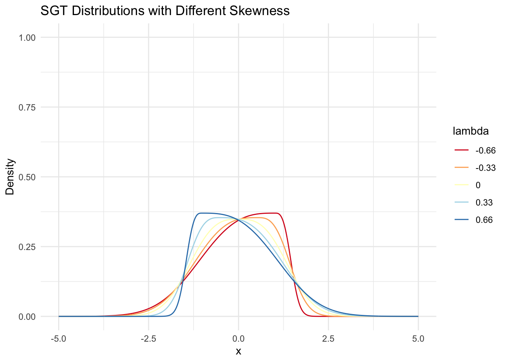
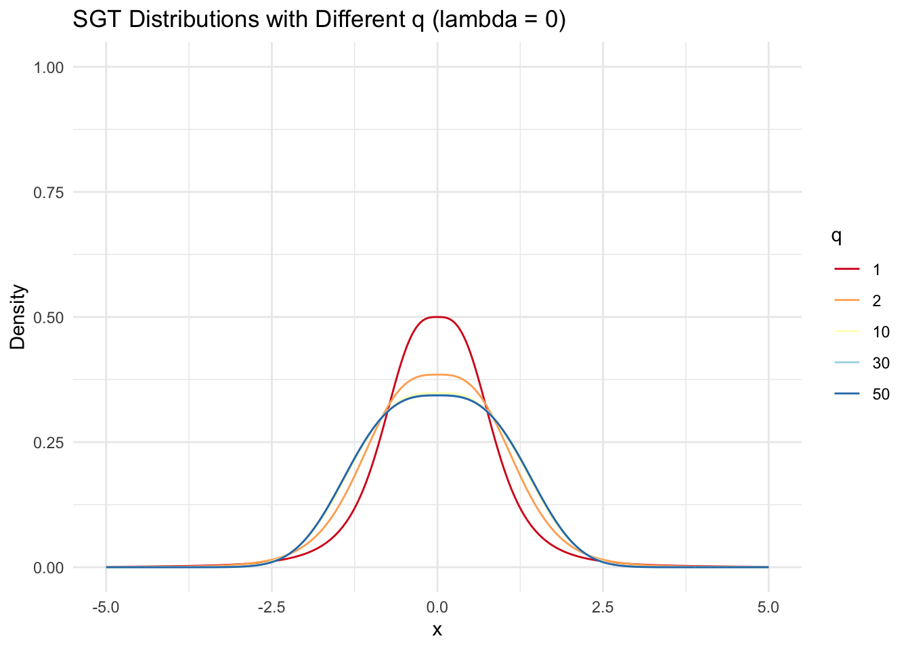
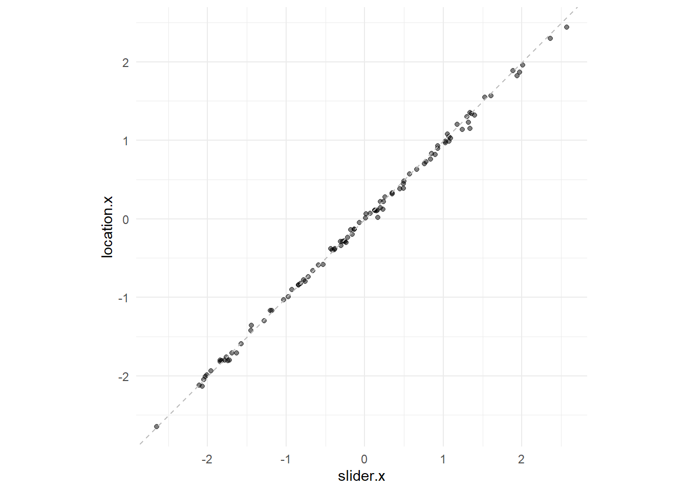

Code
df <- read.csv("vis-decode-slider_all_tidy.csv") %>% as_tibble(.)Let first read in the file.
df <- read.csv("vis-decode-slider_all_tidy.csv") %>% as_tibble(.)Let us just do some very simple pruning through the data:
df %>% count(participantId)# A tibble: 14 × 2
participantId n
<chr> <int>
1 0c671e0c-0be6-4ae5-a78e-638e59d43ddd 492
2 1a39e480-57b1-4bb6-ad31-cf90236fb047 492
3 51da084f-6438-4f40-9569-443698b4437e 492
4 5956a1a1-13a3-417d-aa0e-1a31d1162e80 3
5 5f37a06e-50e4-4489-948f-c4f25bd38d17 492
6 7856a1bc-7bae-436a-a91f-a94e3d3f5683 492
7 85349f2b-c75a-46ff-8f80-fafc92da11a7 492
8 9f6c940d-bb71-406e-872e-2873b533048f 492
9 c6e6055f-2ffb-4751-8737-0017146d1bf7 1
10 c87f9143-d9e8-4f50-afca-03a0839951fb 492
11 dc2d1f07-3b58-4484-a4b1-3f8308154717 492
12 f127411c-336e-40e5-a227-e2d37e777c91 1
13 f21f5e9e-73d2-49a0-a940-19fc14824cc7 1
14 f71b9ae5-1fc2-460f-879e-2984ea8df811 492Though where n < 492 are those that didn’t finish the full set of things. Right now we have 10 trials — 1 done by Maryam, 1 done by Lily, 8 done by me. Those done by Maryam and Lily had some issue with the tangent line (the guideline didn’t show up correctly) but they did their best for interpretation. Let’s pull out these ids
df %>% count(participantId) %>% filter(n == 492) %>% pull(participantId) -> ids
ids [1] "0c671e0c-0be6-4ae5-a78e-638e59d43ddd"
[2] "1a39e480-57b1-4bb6-ad31-cf90236fb047"
[3] "51da084f-6438-4f40-9569-443698b4437e"
[4] "5f37a06e-50e4-4489-948f-c4f25bd38d17"
[5] "7856a1bc-7bae-436a-a91f-a94e3d3f5683"
[6] "85349f2b-c75a-46ff-8f80-fafc92da11a7"
[7] "9f6c940d-bb71-406e-872e-2873b533048f"
[8] "c87f9143-d9e8-4f50-afca-03a0839951fb"
[9] "dc2d1f07-3b58-4484-a4b1-3f8308154717"
[10] "f71b9ae5-1fc2-460f-879e-2984ea8df811"df %>% filter(participantId %in% ids) %>%
filter(grepl("task", trialId) & grepl("test", trialId) ) %>%
select(participantId, trialId, responseId, answer) %>%
mutate(answer = as.numeric(answer)) %>%
pivot_wider(names_from = responseId, values_from = answer, names_repair = "universal") -> task_df # %>% New names:
• `location-x` -> `location.x`
• `location-y` -> `location.y`
• `pixel-x` -> `pixel.x`
• `pixel-y` -> `pixel.y`
• `param-mu` -> `param.mu`
• `param-sigma` -> `param.sigma`
• `param-lambda` -> `param.lambda`
• `param-p` -> `param.p`
• `param-q` -> `param.q`
• `slider-x` -> `slider.x`
• `slider-y` -> `slider.y` # separate_wider_delim(trialId, delim="_", names = c("TaskType", "type", "id")) %>%
# select(-type, -pixel.x, -pixel.y) -> task_df
task_df# A tibble: 500 × 13
participantId trialId location.x location.y pixel.x pixel.y param.mu
<chr> <chr> <dbl> <dbl> <dbl> <dbl> <dbl>
1 0c671e0c-0be6-4ae5-a7… task2_… 1.69 0.247 408. 313. 1.7
2 0c671e0c-0be6-4ae5-a7… task2_… 1.24 0.517 384. 206. 1.2
3 0c671e0c-0be6-4ae5-a7… task2_… 0.07 0.355 321. 270. 0.1
4 0c671e0c-0be6-4ae5-a7… task2_… 1.61 0.536 404. 198. 1.6
5 0c671e0c-0be6-4ae5-a7… task2_… 0.57 0.247 348. 312. 0.5
6 0c671e0c-0be6-4ae5-a7… task2_… 1.17 0.596 380. 174. 1.1
7 0c671e0c-0be6-4ae5-a7… task2_… 1.36 0.338 390. 277. 1.5
8 0c671e0c-0be6-4ae5-a7… task2_… -1.09 0.413 259. 247. -1
9 0c671e0c-0be6-4ae5-a7… task2_… 0.49 0.639 344. 158. 0.5
10 0c671e0c-0be6-4ae5-a7… task2_… 1.42 0.236 393. 317. 1.3
# ℹ 490 more rows
# ℹ 6 more variables: param.sigma <dbl>, param.lambda <dbl>, param.p <dbl>,
# param.q <dbl>, slider.x <dbl>, slider.y <dbl>task_df %>% filter(grepl("task1", trialId)) %>%
mutate(left_area = psgt(location.x, param.mu, param.sigma,
param.lambda, param.p, param.q)) # A tibble: 100 × 14
participantId trialId location.x location.y pixel.x pixel.y param.mu
<chr> <chr> <dbl> <dbl> <dbl> <dbl> <dbl>
1 0c671e0c-0be6-4ae5-a7… task1_… -0.49 0.228 291. 320. -1.1
2 0c671e0c-0be6-4ae5-a7… task1_… 0.57 0.393 348. 255. 0.7
3 0c671e0c-0be6-4ae5-a7… task1_… -0.34 0.535 299. 199. 0
4 0c671e0c-0be6-4ae5-a7… task1_… -1.96 0.531 213. 200. -1.9
5 0c671e0c-0be6-4ae5-a7… task1_… -0.28 0.258 303. 308. -0.5
6 0c671e0c-0be6-4ae5-a7… task1_… 0.11 0.349 323. 272. 0.8
7 0c671e0c-0be6-4ae5-a7… task1_… -0.38 0.304 297. 290. -1.3
8 0c671e0c-0be6-4ae5-a7… task1_… 0.65 0.450 352. 232. 0.8
9 0c671e0c-0be6-4ae5-a7… task1_… -1.49 0.319 238. 284. -1.9
10 0c671e0c-0be6-4ae5-a7… task1_… 1.76 0.628 412. 162. 1.9
# ℹ 90 more rows
# ℹ 7 more variables: param.sigma <dbl>, param.lambda <dbl>, param.p <dbl>,
# param.q <dbl>, slider.x <dbl>, slider.y <dbl>, left_area <dbl>Let’s see if there’s any relation between lambda and area:
task_df %>% filter(grepl("task1", trialId)) %>%
mutate(left_area = psgt(location.x, param.mu, param.sigma,
param.lambda, param.p, param.q, mean.cent=F)) %>%
select(param.lambda, left_area) %>%
ggplot(aes(x = param.lambda, y = left_area)) +
geom_point(alpha = 0.5) +
theme_minimal() + xlim(-1, 1) + ylim(0, 1) +
geom_hline(yintercept = 0.5, linetype="dashed", color="gray")Warning: Removed 1 row containing missing values or values outside the scale range
(`geom_point()`).
Note that lambda = 0 is complete symmetry (\(\lambda \in (-1, 1)\)). We see a definite trend here!
TODO — this is where we use numDeriv !!!
task_df %>% filter(grepl("task2", trialId)) %>%
mutate(answer.x = param.mu,
answer.y = dsgt(x=param.mu, mu = param.mu, sigma=param.sigma,
lambda=param.lambda, p=param.p, q=param.q, mean.cent = F)) %>%
select(participantId, location.x, location.y, answer.x, answer.y)# A tibble: 100 × 5
participantId location.x location.y answer.x answer.y
<chr> <dbl> <dbl> <dbl> <dbl>
1 0c671e0c-0be6-4ae5-a78e-638e59d43ddd 1.69 0.247 1.7 0.247
2 0c671e0c-0be6-4ae5-a78e-638e59d43ddd 1.24 0.517 1.2 0.517
3 0c671e0c-0be6-4ae5-a78e-638e59d43ddd 0.07 0.355 0.1 0.355
4 0c671e0c-0be6-4ae5-a78e-638e59d43ddd 1.61 0.536 1.6 0.536
5 0c671e0c-0be6-4ae5-a78e-638e59d43ddd 0.57 0.247 0.5 0.247
6 0c671e0c-0be6-4ae5-a78e-638e59d43ddd 1.17 0.596 1.1 0.596
7 0c671e0c-0be6-4ae5-a78e-638e59d43ddd 1.36 0.338 1.5 0.338
8 0c671e0c-0be6-4ae5-a78e-638e59d43ddd -1.09 0.413 -1 0.413
9 0c671e0c-0be6-4ae5-a78e-638e59d43ddd 0.49 0.639 0.5 0.639
10 0c671e0c-0be6-4ae5-a78e-638e59d43ddd 1.42 0.236 1.3 0.236
# ℹ 90 more rowsLet’s try to plot the distribution of error, first for x:
task_df %>% filter(grepl("task2", trialId)) %>%
mutate(answer.x = param.mu,
answer.y = dsgt(x=param.mu, mu = param.mu, sigma=param.sigma,
lambda=param.lambda, p=param.p, q=param.q, mean.cent = F)) %>%
select(participantId, location.x, location.y, answer.x, answer.y) %>%
mutate(x_diff = location.x - answer.x) %>%
ggplot(aes(x = x_diff)) + geom_density() + theme_minimal()
task_df %>% filter(grepl("task2", trialId)) %>%
mutate(answer.x = param.mu,
answer.y = dsgt(x=param.mu, mu = param.mu, sigma=param.sigma,
lambda=param.lambda, p=param.p, q=param.q, mean.cent = F)) %>%
select(participantId, location.x, location.y, answer.x, answer.y) %>%
mutate(y_diff = location.y - answer.y) %>%
ggplot(aes(x = y_diff)) + geom_density() + theme_minimal()

TODO: numderiv and angle calculations …
y == 0.5Doesn’t seem to be any particularly standing out …
task_df %>% filter(grepl("task3", trialId)) %>%
ggplot(aes(x = location.x, y = location.y)) +
geom_point() +
theme_minimal() +
geom_hline(yintercept = 0.5, linetype="dashed", color="gray") # + 
# facet_wrap(~ participantId)Task 4 — CDF Mode — Find slope
Recall that mode is just param.mu.
task_df %>% filter(grepl("task3", trialId)) %>%
ggplot(aes(x = location.x, y = param.mu)) +
geom_point(alpha=0.5) + theme_minimal() +
geom_abline(slope = 1, intercept = 0, linetype="dashed", color="gray") +
coord_equal()
Task 5 — Project from dot to axes
df %>% filter(grepl("task5", trialId)) %>%
filter(grepl("test", trialId)) %>%
select(participantId, trialId, responseId, answer) %>%
mutate(answer = as.numeric(answer)) %>%
pivot_wider(names_from = responseId, values_from = answer, names_repair = "universal") %>%
separate_wider_delim(trialId, delim="_", names = c("TaskType", "type", "id")) %>%
select(-type) -> task_5New names:
• `slider-x` -> `slider.x`
• `slider-y` -> `slider.y`
• `location-x` -> `location.x`
• `location-y` -> `location.y`task_5# A tibble: 100 × 7
participantId TaskType id slider.x slider.y location.x location.y
<chr> <chr> <chr> <dbl> <dbl> <dbl> <dbl>
1 0c671e0c-0be6-4ae5-a7… task5 1 0.57 0.25 0.57 0.247
2 0c671e0c-0be6-4ae5-a7… task5 2 0.07 0.36 0.07 0.355
3 0c671e0c-0be6-4ae5-a7… task5 8 -0.66 0.52 -0.66 0.523
4 0c671e0c-0be6-4ae5-a7… task5 6 -0.84 0.49 -0.84 0.496
5 0c671e0c-0be6-4ae5-a7… task5 9 1.09 0.5 1.03 0.494
6 0c671e0c-0be6-4ae5-a7… task5 5 0.16 0.35 0.11 0.349
7 0c671e0c-0be6-4ae5-a7… task5 4 -0.38 0.3 -0.38 0.304
8 0c671e0c-0be6-4ae5-a7… task5 3 0.93 0.59 0.93 0.59
9 0c671e0c-0be6-4ae5-a7… task5 7 -2.07 0.49 -2.13 0.494
10 0c671e0c-0be6-4ae5-a7… task5 10 -0.84 0.42 -0.84 0.42
# ℹ 90 more rowsHow accurate where the xs?
task_5 %>%
ggplot(aes(x = slider.x, y = location.x)) +
geom_point(alpha=0.5) +
theme_minimal() +
geom_abline(intercept = 0, slope = 1, color = "gray", linetype = "dashed") +
coord_equal()
How accurate where the ys?
task_5 %>%
ggplot(aes(x = slider.y, y = location.y)) +
geom_point(alpha=0.5) +
theme_minimal() +
geom_abline(intercept = 0, slope = 1, color = "gray", linetype = "dashed") +
coord_equal()